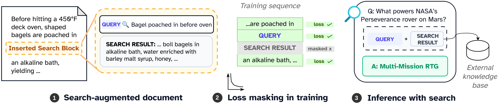
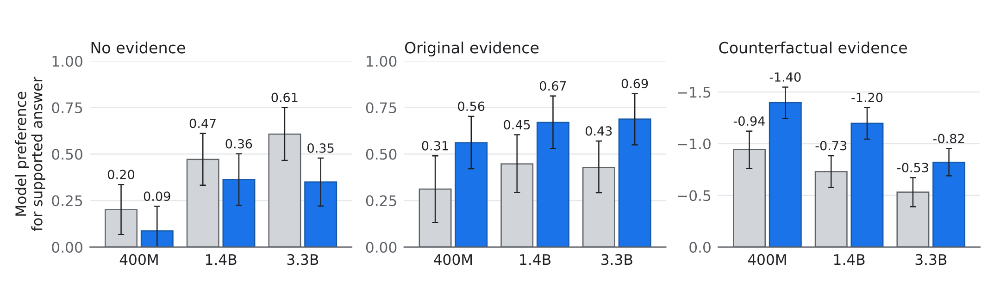

Choose when and what to search.
We fine-tune a small annotator on teacher-generated examples. It scores candidate insertion points in a causal pass through each document, then writes queries from the text preceding the selected positions.
Many factual details in a training corpus cannot be inferred from general patterns and must be memorized. This is especially challenging for smaller models. Search offers another way to access that information, using external sources that can change without retraining the model.
Language models are usually taught to use search after pretraining. We instead augment ordinary pretraining documents with inline search calls and retrieved evidence. The resulting models, QueryLM, learn when to search, what to search for, and how to use the results to continue the document.
We train models from 360M to 3.3B parameters on Wikipedia and DCLM-Edu, with over 100B tokens in the augmented DCLM-Edu corpus. QueryLM improves on search-based question answering and follows supplied evidence more readily; the advantage persists after fine-tuning.
We insert search queries and retrieved evidence into ordinary training documents. Each query uses only the preceding text. The model learns to generate the query and continue the original document, with the retrieved response available as context.
At Racetrack Playa, stones leave trails stretching over 100 meters, propelled by wind-driven, millimeter-thin ice.
Racetrack Playa stone propelled by
Thin ice sheets pushed by light winds move the stones…
wind-driven, millimeter-thin ice.
Simplified excerpts from the paper, not live searches.

The original document remains the prediction target. The inserted queries demonstrate how to ask for missing information, while the retrieved text supplies context for the continuation. Because each query is written from the preceding text alone, it does not get to look ahead at the answer.
We fine-tune a small annotator on teacher-generated examples. It scores candidate insertion points in a causal pass through each document, then writes queries from the text preceding the selected positions.
Queries are run against a local BM25 index over Sphere web documents. We select relevant sentences and filter responses by their overlap with the original continuation, using this overlap as a proxy for usefulness.
The next-token objective supervises document text and queries. Retrieved responses remain visible as context but are masked from the loss, so the model is not directly trained to reproduce the search engine’s output.
We compare QueryLM with standard models trained on the same documents without search augmentation, with pretraining compute matched.
QueryLM performs better on search-based QA, retains an advantage after fine-tuning, and follows counterfactual evidence more readily. Select a result category to explore the comparisons.

QueryLM performs better on knowledge-intensive question answering. The advantage remains after both models receive supervised fine-tuning (SFT), including fine-tuning with search.
The eight tasks include factual questions about names, dates, and entities, as well as multi-hop questions that require combining information. We compare base models, models given standard supervised fine-tuning, and models given a higher proportion of search demonstrations during fine-tuning.
The tested post-training recipes narrow the gap, but do not fully recover the benefit of search during pretraining.
For the base-model comparison, the Standard baseline receives QueryLM’s queries and retrieved evidence. This tests whether search pretraining improves how models use the same information. After search fine-tuning, both models generate their own queries.

We supply evidence that supports either an original fact or a plausible counterfactual. QueryLM more readily adjusts its predictions to the supplied evidence.
The two views below test this in different ways. “Generated answers” measures context following on the QA benchmarks. “Controlled fact probe” compares the probability of original and alternative values for 1,000 facts from training documents. In both cases, the evidence is supplied to isolate its effect on the answer.
This measures responsiveness to context. Following counterfactual evidence is not the same as improving factual accuracy.


Base QueryLM is slightly below the baseline on general benchmarks. After search fine-tuning, the models are broadly comparable, with mixed results across tasks.
Shorter responses and fewer search blocks reduce training overhead while retaining useful search ability. The ablations examine this performance–cost trade-off.
The collection includes QueryLM checkpoints, compute-matched Standard baselines, augmented training corpora, and the search annotator. Use base checkpoints to study what is learned during pretraining, or Search SFT checkpoints to examine the models after search-augmented fine-tuning. The filters below keep each QueryLM checkpoint beside its corresponding baseline.
Wikipedia and DCLM-Edu models, from 360M to 3.3B parameters. Base and search fine-tuned checkpoints are paired with their Standard baselines.
Browse the model collectionDocuments with inline search queries and evidence, plus the search fine-tuning conversations.
The Gemma 4 E4B LoRA adapter used to identify search insertion points and write queries.
Get the annotatorShowing 8 checkpoint pairs.
No checkpoints match these filters. Change a selection or reset the filters.
| Corpus | Size | Stage | QueryLM | Standard baseline |
|---|---|---|---|---|
| Wikipedia | 360M | Base | querylm-wiki-360m | standard-wiki-360m |
| Wikipedia | 360M | Search SFT | querylm-wiki-360m-sft-search | standard-wiki-360m-sft-search |
| DCLM-Edu | 400M | Base | querylm-dclm-400m | standard-dclm-400m |
| DCLM-Edu | 400M | Search SFT | querylm-dclm-400m-sft-search | standard-dclm-400m-sft-search |
| DCLM-Edu | 1.4B | Base | querylm-dclm-1.4b | standard-dclm-1.4b |
| DCLM-Edu | 1.4B | Search SFT | querylm-dclm-1.4b-sft-search | standard-dclm-1.4b-sft-search |
| DCLM-Edu | 3.3B | Base | querylm-dclm-3.3b | standard-dclm-3.3b |
| DCLM-Edu | 3.3B | Search SFT | querylm-dclm-3.3b-sft-search | standard-dclm-3.3b-sft-search |
Preprint, November 2026. arXiv:2611.26809.
@article{ponkshe2026searchfromthestart,
title = {Search From the Start: Search-Native Pretraining for Language Models},
author = {Ponkshe, Kaustubh and Je, Gyung Hyun and Taga, Stefan and Raffel, Colin and Jaggi, Martin},
journal = {arXiv preprint arXiv:2611.26809},
year = {2026}
}